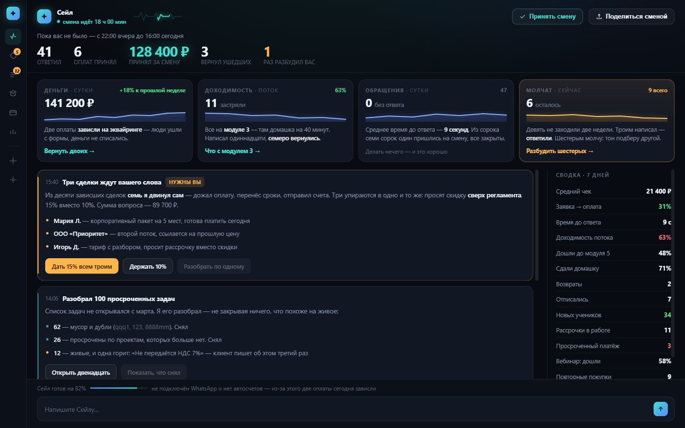
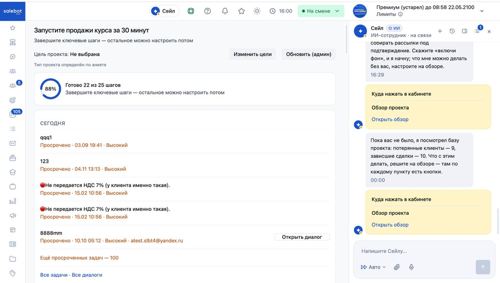
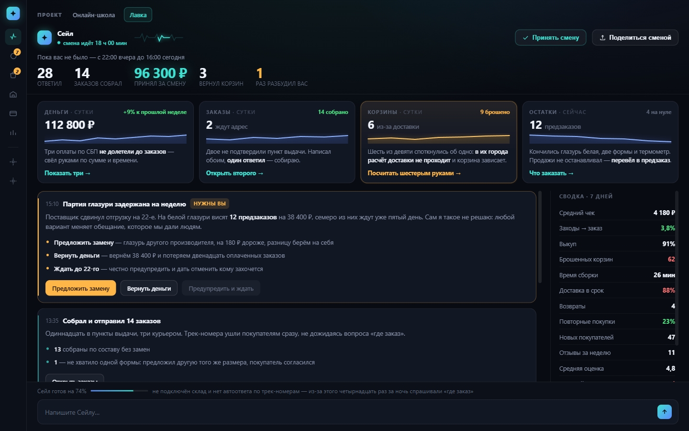

Кабинет вращается вокруг ИИ-сотрудника, а не вокруг настроек программы.
Сейл перестаёт пересказывать проблемы и начинает их решать. Экран перестаёт быть чек-листом «готово 22 из 25» и становится его сменой: «пока вас не было — ответил 41, принял 6 оплат, 128 400 ₽, разбудил вас 1 раз». Чат перестаёт быть колонкой сбоку. И всё это — в облике, который хочется переслать.
Четыре изменения. Первое — про продукт, остальные три — про то, как он показан. Разница между ними важна, и ниже я её не заминаю.
| Претензия | Чем закрывается |
|---|---|
| Эффект вау, «нанокостюм» | Экран работает при вас: пульс, бегущий шов, выручка растёт сама. Цикл «написал шестерым → двое вернулись → деньги пришли» проходит на глазах за двадцать секунд |
| Диалог и экран живут отдельно | Одна лента вместо «полотно + колонка». Рассинхрон невозможен, а не исправлен. Жанр «куда нажать в кабинете» исчезает — нажимать некуда, всё здесь |
| Нет ощущения проактивности | Сто задач разобраны, девятерым написано, семь сделок двинуты — до того, как вы вошли. Наверх поднимается одно решение, а не девятнадцать проблем |
| «Заскринь меня друзьям» | Отчёт смены со своей цифрой и строкой «1 раз вас разбудил» |
Пункты 2–4 — это подача: те же данные, другая рамка. Недели работы, риск близок к нулю. Пункт 1 — это продукт: ассистент начинает действовать от имени бизнеса, и включать его надо ступенями. Порядок важен именно такой: экран — это то, что делает активность приемлемой. Без него «он что-то сделал» читается как угроза. Разложено в «Что дальше».
Тот же проект, что на вашем скриншоте: сто просроченных задач, девять потерянных клиентов, десять зависших сделок. Экран живой — нажимается всё, и он работает, пока вы на него смотрите.

Если экран ниже кажется картинкой — он не картинка. Откройте его целиком →
Нажмите «Разбудить шестерых» в правой плитке. Сейл напишет шестерым молчащим — каждому про то, где он остановился, — строки побегут в ленту, двое ответят, один попросит счёт, выручка вырастет на глазах, а плитка погаснет в ноль. Через девять секунд после открытия придёт оплата, которую никто не просил: экран работает и без вас.
А кнопка «Принять смену» в шапке закрывает смену: экран переключается с «пока вас не было» на «с вами», и дальше Сейл спрашивает сразу, а не копит в отчёт. Что это значит — в следующем разделе.
Вернёмся к экрану, с которого всё началось. Нагруженный проект, онлайн-школа, всё настроено — 88 % шагов пройдено.

«Обзор проекта» на реальном аккаунте. Справа — ИИ-сотрудник Сейл.
К нему четыре претензии:
Посмотрите на кадр ещё раз — все четыре видны на нём буквально:
Центр занят просроченными задачами: qqq1, 123,
8888mm, «Не передаётся НДС 7%». Внизу — «Ещё просроченных задач — 100».
Это первое, что видит владелец бизнеса утром.
«Посмотрел базу: потерянные клиенты — 9, зависшие сделки — 10. Что с этим делать, решите на обзоре». Он нашёл девятнадцать проблем и не тронул ни одной.
Дважды подряд карточка «Куда нажать в кабинете → Обзор проекта → Открыть обзор». Чат предлагает открыть экран, на котором открыт сам. Вот что значит «живут отдельной жизнью».
88 %, сто просрочек и мусорные задачи с чужими датами. Такую картинку не отправляют друзьям — её закрывают.
Все четыре — следствия одной подмены жанра. Продукт продаёт ИИ-сотрудника, а интерфейс сделан как мастер настройки программы. Мастер меряет вас чек-листом. Сотрудник приходит и рассказывает, что сделал. Поэтому чиним жанр, а не четыре места.
| Было | Стало |
|---|---|
«Ещё просроченных задач — 100», внутри qqq1, 123, 8888mm |
Карточка «Разобрал 100 просроченных задач»: 62 мусора снял, 26 по мёртвым проектам снял, 12 живых оставил — и одна горит: «Не передаётся НДС 7%», клиент пишет третий раз |
| «Потерянные клиенты — 9, зависшие сделки — 10. Решите на обзоре» | Девятерым уже написал — трое ответили. Семь сделок из десяти двинул сам. Наверх выходит только то, где нужен человек: три просят скидку сверх регламента |
| Чат-колонка, которая предлагает «Открыть обзор» | Колонки нет. События и реплики — одна лента. Расходиться нечему, предлагать некуда |
| «Готово 22 из 25 шагов», 88 %, круговая диаграмма | Одна тихая строка внизу: «готов на 82% — нет WhatsApp и автосчетов, из-за этого две оплаты сегодня зависли». Готовность привязана к последствию, а не к проценту |
| «Премиум (устарел)» и «Подтвердите почту» баннерами поверх всего | Тонкая строка события внизу ленты: «на новом тарифе дешевле при вашем объёме — посчитать?» |
| «Обновить (админ)» — служебная кнопка в пользовательском интерфейсе | Убрана |
Слово выбрано не ради красоты — оно задаёт жанр. Мастер настройки меряет вас чек-листом: сколько вы не сделали. Сотрудник приходит и сдаёт смену: вот что сделал я. Отсюда всё остальное.
Смена — это отрезок вашего отсутствия. Она существует только потому, что вас не было: пока вы спали, ехали, вели урок — кто-то работал. Экран и есть момент сдачи дел.
Смена начинается, когда вы ушли, и закрывается, когда вы вернулись и приняли дела. Как сдача смены у сменного врача: ночной уходит, дневной принимает.
| Ситуация | Что показывает экран |
|---|---|
| Вы весь день в кабинете | Смены нет. Шапка говорит «сегодня с вами» и показывает сутки. Сейл спрашивает сразу, а не копит в отчёт. Отчёт появится завтра утром |
| Не заходили три дня | Смена длинная: «вас не было 3 дня». События сворачиваются в сводные карточки — не двести строк, а «ответил 118, записал 14, трижды не смог без вас» |
| Первый день, проект пустой | Смены ещё не было. Вместо неё — сборка: Сейл строит ваше дело построчно, с объектом и ценой в каждой строке |
| Проект мёртвый, клиентов нет | Смена есть, но пустая. Вместо нулей — «клиентов не было; хотите, разбужу старых?». Пустота становится предложением, а не упрёком |
Это главное следствие правила — и место, где легче всего соврать самому себе.
| Где | Какое окно и почему |
|---|---|
| Шапка и лента — отчёт смены | Плавающее окно вашего отсутствия. Это и есть отчёт, он обязан отвечать на вопрос «что было, пока меня не было». В нашем кадре — 18 часов, с 22:00 вчера до 16:00 сегодня, и 128 400 ₽ подписаны «принял за смену» |
| Плитки и сводка — ориентиры | Стабильные календарные окна: сутки, неделя, поток. Их нужно сравнивать день к дню, иначе «+18%» ничего не значит. Поэтому в плитке «Деньги · сутки» стоит 141 200 ₽ — другое число, и так и должно быть: разница пришла вечером, когда вы ещё были на месте |
Отсюда и счётчик в шапке. Он показывает не абстрактный аптайм, а длительность текущей смены — то есть сколько вас не было. Каждое окно на экране подписано своим словом: смена · сутки · поток · сейчас · 7 дней. Ни одно число не висит без периода.
Карточка отвечает по порядку: что произошло → что я из этого сделал → что нужно от вас. Человек не работает, он утверждает или отменяет. Карточка «нужны вы» закреплена сверху — новые события не могут её утопить.
Плотность наблюдения и плотность требований — разные вещи. На экране восемнадцать чисел и одна просьба к человеку. В сводке это написано прямо: «нагрузка на вас — 1 решение».
Не списком из одиннадцати шагов, а тогда, когда упёрлись: «две оплаты зависли, потому что нет автосчетов». Чек-лист исчезает вместе с процентами и замочками.
Пока чат остаётся колонкой, у него своя история и своё состояние, и рассинхрон неизбежен. В одной ленте он становится невозможен технически, а не «исправлен».
Пульс кричит — четыре плитки, у каждой действие. Лента говорит — события дня, одна кнопка на карточку. Сводка молчит — четырнадцать ориентиров, ни одной кнопки. Громкость обратно пропорциональна количеству.
Счётчики и правила тревог — обычные запросы, мгновенные и одинаковые между заходами. Модель вызывается по событию, а не по показу экрана: подняли флаг — один раз сформулировала реплику, текст сохранился. Иначе экран стоил бы денег на каждом открытии, а выручка бы «плавала».
Вау здесь делает не оформление, а то, что машина работает при тебе: пульс дышит, шов бежит, выручка тикает вверх сама, а строка «на смене 6 ч 12 мин» сообщает, что он не ждал, пока его позовут.
Скелет один. Меняются состав пульса, состав сводки, голос Сейла и набор действий. Состав берётся из уже существующей анкеты проекта — модалки «Изменить цели»: чем занимаетесь · что настроить · где общаетесь.
Отрасль задаёт голос. Инструменты задают состав.
Восемь отраслей на восемь инструментов — это 64 сочетания, поэтому экранов на каждый бизнес не делаем: складываются навыки, а не размножаются макеты. Плитка — не виджет из каталога, который пользователь собирает сам (это был бы новый чек-лист, только нарядный), а навык, которым Сейл владеет, с контрактом из четырёх частей: что показывает · когда тревожится · что умеет сделать · как об этом говорит. Четвёртая часть и отличает навык от виджета. Набор собирает Сейл, а не пользователь.
У владельца школы есть вторая точка — «Лавка», магазин наборов и материалов к курсу. Тот же аккаунт, тот же Сейл, переключатель проектов в левом верхнем углу экрана. Вот как выглядит его смена там.

Переключатель «Онлайн-школа · Лавка» в шапке рабочий — между проектами можно ходить. Открыть «Лавку» целиком →
| Что | Онлайн-школа | Лавка |
|---|---|---|
| Плитки пульса | Деньги · Доходимость потока · Обращения · Молчат | Деньги · Заказы · Корзины · Остатки |
| Что считается тревогой | Одиннадцать застряли на модуле 3 — там домашка на сорок минут | Шесть корзин из девяти упали на расчёте доставки |
| Главный цикл смены | Написать шестерым молчащим — каждому про то, где он остановился | Посчитать доставку шестерым руками, раз калькулятор в их города не отвечает |
| Решение, которое нельзя принять за человека | Три сделки просят скидку сверх регламента | Партия задержана: заменить, вернуть деньги или честно ждать |
| Сводка | Доходимость, домашки, вебинар, рассрочки, застрявшие на модуле | Выкуп, возвраты, время сборки, доставка в срок, оборачиваемость |
| Постер смены | «41 клиенту ответил · 6 оплат провёл» | «28 покупателям ответил · 14 заказов собрал» |
| Чего не хватает Сейлу | WhatsApp и автосчетов — из-за этого две оплаты зависли | Склада и автоответа по трек-номерам — из-за этого четырнадцать раз спросили «где заказ» |
Те же четыре зоны на тех же местах. То же правило смены и тот же счётчик отсутствия. Плитка «Деньги» — она есть всегда. Тихая строка готовности, привязанная к последствию, а не к проценту. И «1 раз вас разбудил» на постере: эта строка не про отрасль, она про то, сколько раз пришлось звать человека — и поэтому одинаково работает в школе, в лавке и в мастерской.
Третий случай — услуги с записью: мастерская, салон, практика. Там вместо доходимости и корзин — загрузка недели и пустые окна, а тревога звучит как «в четверг пусто при непустом листе ожидания». Отдельного макета он тоже не требует: это другой набор навыков в том же скелете.
Аргумент не «построим новое», а «половина у вас уже написана, вы это прячете»:
Те же данные, другая рамка. Фронтенд и немного агрегации, риск близок к нулю.
Здесь ассистент начинает действовать на данных владельца и от имени бизнеса. Это продуктовое решение, а не фронтенд, и включается оно ступенями — каждую можно взять отдельно.
| Ступень | Что делает | Риск |
|---|---|---|
| 1 · Разбирает, не трогая | Группирует сто задач, отделяет мусор от живого, показывает двенадцать | Почти нулевой |
| 2 · Действует обратимо внутри системы | Снимает дубли — снимает, а не удаляет; двигает сроки; сводит оплаты с заказами | Низкий, если есть «вернуть» |
| 3 · Пишет наружу по вашему правилу | Молчащим, брошенным корзинам, задержанным доставкам | Средний: нужны лимиты, предпросмотр и стоп-кран |
| 4 · Обещает деньгами от вашего имени | Скидки, возвраты, замены | Не делаем никогда. Это и есть карточка «нужны вы» |
Первая ступень почти бесплатна и сразу снимает главную претензию: экран перестаёт быть списком из ста долгов. Четвёртая не делается никогда — на ней и держится строка «1 раз вас разбудил».
Порядок важнее размера. Активность без такого экрана страшнее, чем полезнее: он что-то делает, а вы узнаёте об этом из колонки, которая живёт своей жизнью. Экран — это поверхность отчётности: показывает, что сделано, даёт открыть, проверить и отменить.